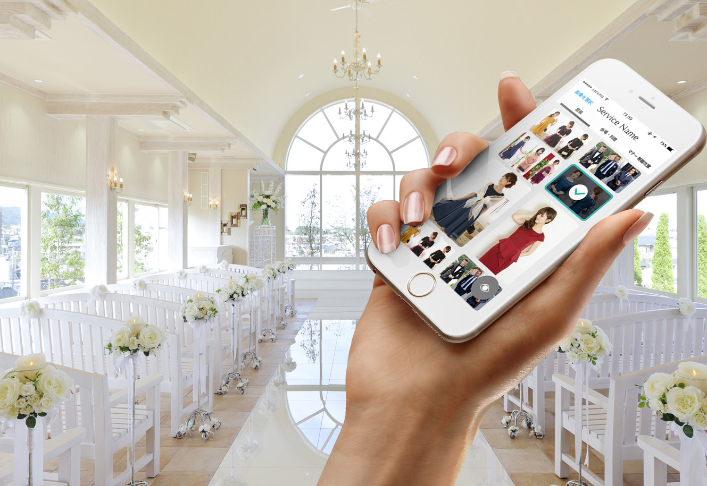

< 戻る
みんなのウェディング1dayインターン製作物
制作期間
2017.11.23
担当範囲
カスタマージャーニーマップの作成,アプリケーションの企画,画面設計,プレゼン
使用したツール
Illustrator,Photoshop
メンバー
個人
URL
作成した画面UIコンセプト
式をあげる側が「つくる」結婚式
背景
みんなのウェディング函館1dayインターンシップでの製作物。"初めて結婚式に行く人"に向けたスマホアプリを考えるというお題で行われ、画面設計まで行った。
作成したもの
結婚式をあげる側が「服」や「マナー」などを招待状として発信できるアプリ
アピールポイント
分析に基づいて、問題を解決するような企画をできた点。ウェディングに詳しい社員からのフィードバックを得ながら作成した点。
Process
1.チームビルディング
参加者でカスタマージャーニーマップを作成する前に偏愛マップ用いて自己紹介した。
2.カスタマージャーニーマップ作成
参加者全員で「初めて友人の結婚式に誘われてから結婚式当日まで」のジャーニーマップを作成。
3.課題の整理
当日社員の方から配られた紙を用い、対象ユーザー、利用シーン、現状の課題、アプローチ方法をまとめた。
4.ユーザの体験について考える
現状の課題を、「参加者がしきたりやマナーを気にしなくてはならないこと」と設定した。
5.何を作るか考える
結婚式をあげる側から、式場がどんな場所でどういう格好が似合って、気をつけてほしいルールなどを動画や写真で招待状として送ることができるサービスを考えた。
6.プロトタイプ作成
アプリのペーパープロトタイプを作成した。
7.画面設計
IllustratorとPhotoshopを使用し、アプリの画面を作成した。
8.発表とフィードバック
作成したUIとサービスについて発表しフィードバックをもらった。サービスについて使役になってしまわないような工夫が必要であるとの意見をいただいた。